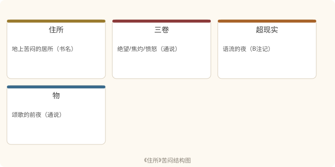

住所
一、基本信息
| 作者 | 聂鲁达 |
|---|---|
| 成书/出版 | 作者页注记：Britannica——住所（Residence on Earth）——超现实主义苦闷诗（年份通说待核——1933-35三卷说） Pablo Neruda — Encyclopaedia Britannica（百科全书） |
| 国别/地区 | 智利 |
| 时代 | 近代 · 20世纪30年代 |
| 体裁 | 诗集 |
| 语言 | 西班牙语 |

《住所》苦闷结构图（主题·结构图）
二、创作背景
作者页注记：住所——'超现实主义苦闷诗（Britannica）'。
Britannica：聂鲁达——1971诺奖（作者页交叉——待核）。
题材（通说待核）：'住所'三卷：绝望的独白与物的'航程'。
三、内容脉络
（通说待核）三卷：绝望/焦灼/愤怒（卷名通说待核）。
（通说待核）'物的颂歌'的前夜（通说待核）。
四、主要人物表
| 人物 | 身份 | 说明 |
|---|---|---|
| 抒情'我' | 苦闷的歌者 | （通说待核） |
五、主题与艺术特点
- '超现实主义苦闷'（B注记）。
- 物的航程与衰亡（通说待核）。
- 从情诗到政治的中转（作者页语境）。
六、影响与评论
- Britannica：Residence on Earth——超现实主义苦闷诗（作者页注记）。
Pablo Neruda — Encyclopaedia Britannica（百科全书） - Britannica：1971诺奖（作者页交叉——待核）。
Pablo Neruda — Encyclopaedia Britannica（百科全书）
七、阅读建议
难点
- '超现实'的语流。
- 三卷的分期。
- 《住所》中译名（《居住在地上》）待核。
- 西班牙文原版。
聂鲁达中期；先于《一般之歌》。
八、待核实
- 三卷卷名与年份（1933/1935/1939说）核对（通说）。
- '超现实主义苦闷诗'评价出处核对。
- 《马丘比丘》归属《一般之歌》待核。
本页主要来源
聂鲁达的其他收录作品：二十首情诗和一支绝望的歌一般之歌住所